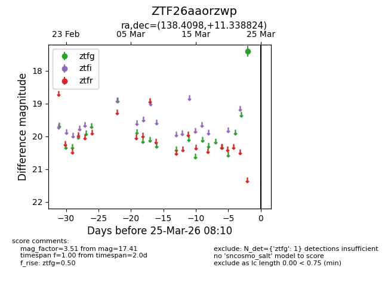
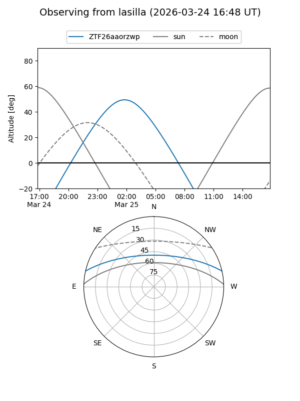
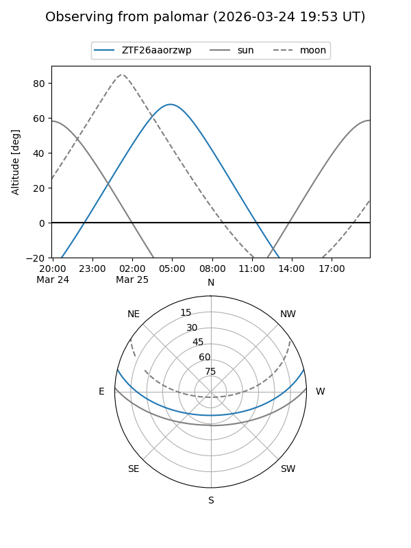

ZTF26aaorzwp
Target ZTF26aaorzwp at 2026-03-25 08:12
Aliases and brokers:
FINK: link
Lasair: link
ALeRCE: link
alt names
ZTF26aaorzwp (ztf,fink_ztf)
Coordinates:
equatorial (ra, dec) = 138.4098,+11.33882
equatorial (HMS+DMS) = 09:13:38.35,+11:20:19.76
galactic (l, b) = (219.0113,+36.65576)
Flags:
Photometry:
last ztfg=17.41
1 ztfg detections
Lightcurve

Visibility


Additional plots